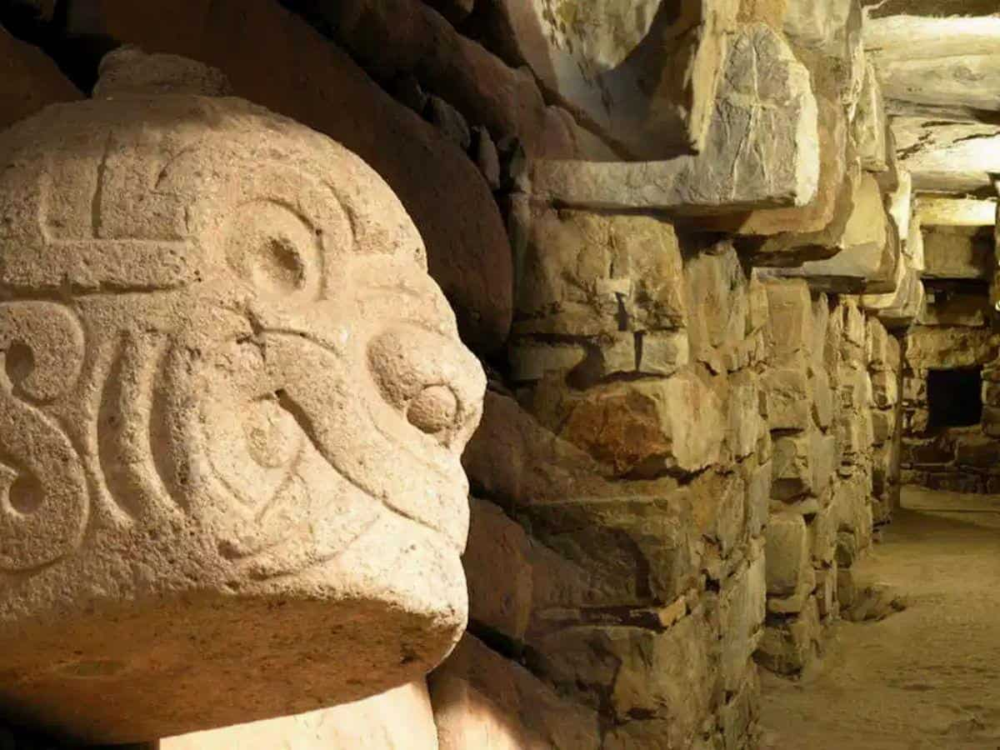

about CHAVIN
Chavín de Huántar is an archaeological site (or archaeological monument) located in the district of Chavín de Huántar, province of Huari, department of Áncash, in Peru. It is located 462 km northeast of Lima and 86 km from Huaraz,

the CHAVIN is a culture of Peru
CHAVIN’s characteristics
Location and Chronology
Main center: Chavín de Huántar, in Áncash, Peru, at the confluence of the Mosna and Huachecsa rivers.
Altitude: about 3150 meters above sea level.
Period: Early Horizon, between 1200 and 400 BCE.
Functioned as a ceremonial and pilgrimage center between 1500 and 300 BCE.
Social and Political Organization
Theocratic state: ruled by priests who exercised power in the name of the gods.
Class-based society: priests and warriors formed the elite; farmers and artisans made up the lower classes.
Priests controlled rituals, calendars, and astronomical knowledge.
Architecture
Monumental stone temples with a U-shaped layout and superimposed platforms.
Underground galleries and internal passages used for rituals and sensory effects.
Hydraulic channels and advanced drainage systems integrated into the temple.
Main structures: Old Temple, New Temple, El Castillo.
the CHAVIN and The nail heads are a symbol